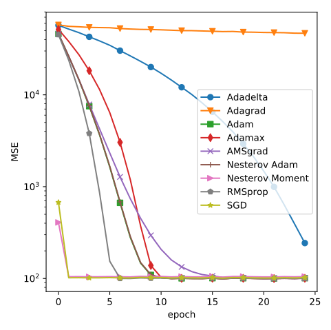
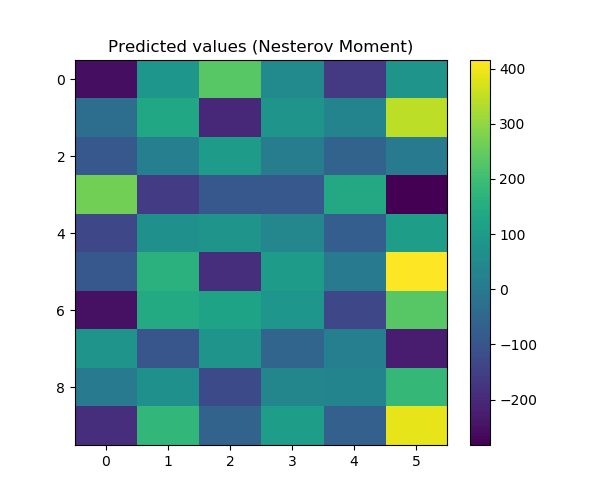
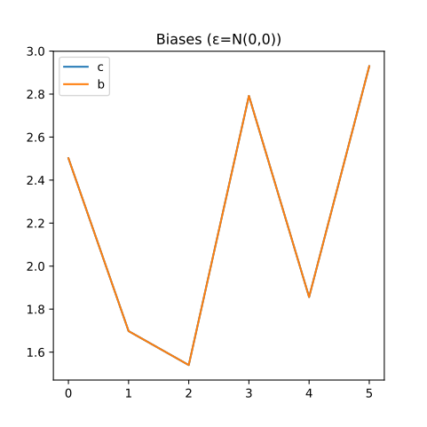

线性回归¶
摘要
本节介绍如何使用类模型(Model)来编写一个线性回归器，以拟合出一个线性模型。本节将第一次介绍如何编写一个带用户参数(选项)的Project，并且允许用户选择不同的优化器、对比验证不同优化算法的效果。
理论¶
一般回归问题¶
设存在一个多输出方程\mathbf{y} = \mathcal{F}(x)，当然\mathcal{F}可以是非线性函数，那么我们可以考虑使用一个带可调参数的模型\mathbf{D}_{\boldsymbol{\Theta}}(\mathbf{x})来模拟它，其中\boldsymbol{\Theta}是可调的参数。于是，该问题可以被表述为
在我们不知道\mathcal{F}的情况下，我们的目的是使用大量的\mathbf{x}_k,~\mathbf{y}_k样本，来调整出一个最优的近似模型\mathbf{D}_{\boldsymbol{\Theta}}。由于\mathcal{F}是非线性的，这要求我们的\mathbf{D}_{\boldsymbol{\Theta}}也可以是非线性的。实际情况下，这样的问题往往不容易求解，尤其是信号的非线性性极强时，该问题很容易陷入局部最优解，从而对求得一个可接受的解造成很大的障碍。
这里\mathcal{L}是损失函数。在回归问题中，很多情况下我们都只能选择均方误差 (Mean squared error, MSE)作为损失函数，这是因为回归问题的目的是模拟出一组信号来，而这些信号的分布范围可能是任意的。在一些特别的应用里，例如，如果我们的信号全部为正值，那么我们可以考虑使用信噪比 (Signal-to-noise ratio, SNR)来作为我们的损失函数。
线性回归¶
继上一节的学习，我们知道如何解一个定义为
的分类模型。在本节，让我们考虑一个更简单的模型：
现在，\mathbf{y}是关乎\mathbf{A}和\mathbf{c}的一个仿射函数，并且我们仍然保留噪声函数\boldsymbol{\varepsilon}。由于这是一个线性模型，我们可以想象到，存在一个线性回归器，\mathbf{W},~\mathbf{b}，使得预测结果为
类似上一节，假设我们的数据集(\mathbf{x},~\mathbf{y}) \in \mathbb{D}符合(3)定义的数据分布特征。我们的基本要求是，在我们不知道\mathbf{A},~\mathbf{c}的情况下，使用大量(\mathbf{x}_k,~\mathbf{y}_k) \in \mathbb{D}样本训练一个线性分类器，使得当我们给定任意一个新样本\mathbf{x}的时候，分类器能推断出其对应的\mathbf{y}。
故而，该问题可以描述为
在本例中，\mathbf{y}有正有负，因此我们使用均方误差来作为损失函数。
求解问题¶
作为线性问题，该问题实际上可以写出其解析解。未免读者感到过于突兀，我们先从一个简单的问题开始入手：
例子：一次函数的线性回归
如果我们的矩阵\mathbf{A}退化为标量a，向量\mathbf{c}退化为标量c，那么(3)可以重新写为：
考虑我们拥有N个样本点(x_k,~y_k)，上述问题实际上可以求得解析解。设由这N个点构成了样本向量\mathbf{x}_d,~\mathbf{y}_d (注意与前述的向量区分开来)，则问题可以写成
这就是附图所示的，拟合到直线的一次函数回归问题。将该损失函数展开，有
令\dfrac{\partial \mathcal{L}(a,~c)}{\partial a}=0,~\dfrac{\partial \mathcal{L}(a,~c)}{\partial c}=0，则我们得到一组二元一次方程组
解之，得
这个式子在诸多教材上都会出现，作为学生解回归问题的入门话题。可见，我们在本节讨论的问题并不是一个陌生的问题，相反，我们过去非常熟悉的一个问题，是这个问题的退化到标量下的特殊情况。另，计算该问题的相关系数，我们常使用
其中\overline{x} = \sum_k x_k ,~ \overline{y} = \sum_k y_k。
有了解上述例子的基础，我们自然可以写出，
提示
接下来的求导主要涉及单值对矩阵求导（导数仍是矩阵），单值对向量求导（导数仍是向量）。可以参考The Matrix Cookbook查到对应情况下的求导结果。
同理，令\dfrac{\partial \mathcal{L}(\mathbf{A},~\mathbf{c})}{\partial \mathbf{A}}=0,~\dfrac{\partial \mathcal{L}(\mathbf{A},~\mathbf{c})}{\partial \mathbf{c}}=0，则我们得到一组二元一次方程组
解之，得
可见，当上式中的逆不存在时（即低秩的情况），该方程还是有可能解不唯一。
同时，相关系数的计算可以表示为
这就是皮尔森相关系数 (Pearson's correlation)。其中\overline{\mathbf{x}} = \sum_k \mathbf{x}_k ,~ \overline{\mathbf{y}} = \sum_k \mathbf{y}_k，\cdot表示的是两个向量按元素各自相乘。它是式(11)在多变量问题上的推广。相当于对向量的每一个元素，分别从统计上求取皮尔森相关系数，然后对向量每个元素对应的皮尔森相关系数求取平均值。
优化算法¶
接下来，我们要介绍几种最常见的优化算法。关于更多这方面的内容，可以查考Google团队编写的在线电子书Deep Learning。笔者打算在未来为此开辟专题写文，因此这里只是介绍几种常见的一阶梯度下降算法。传统优化领域里，单靠一阶梯度下降往往难以满足对准确度的需求，但深度学习(Deep learning)往往必须使用这些简单的一阶梯度下降算法，就连使用一阶梯度近似二阶梯度的算法共轭梯度下降，在很多情况下都被认为是费用(cost)过高。这是由于一个深度网络，往往具有大量的参数需要训练，因此一个Model的参数少则数十MB，多则上GB。一阶梯度下降算法所需的计算量小，能确保我们一次迭代的过程能迅速完成，因而备受青睐。为了提升其性能，深度学习领域内也对其进行了诸多改进。
注意
其实，论到优化算法，往往不得不提到反向传播。不过实际上，一个Tensorflow的入门者，其实完全不需要学习如何推导反向传播的过程。下面我们的叙述也完全不会提及反向传播相关的内容。关于为何我们不需要了解反向传播，在下一节我们会论到。但是，在本教程后期，介绍高级技巧的时候，我们会详细展开。事实上，笔者认为，一个Tensorflow的用户，如果只是为了编写代码，反向传播与ta其实无关痛痒；但只有真正掌握反向传播，我们才算是真正入门了神经网络的理论。
我们在这里说到优化算法，是用在训练网络上的。事实上，只有几种个别的机器学习应用，需要我们在测试阶段执行迭代算法 (iterative algorithm)。一般来说，深度学习的训练过程可以被普遍地描述为：已知一个带可调参数\boldsymbol{\Theta}的模型\mathcal{D}_{\boldsymbol{\Theta}}，已知一组数据集(\mathbf{x}_i,~\mathbf{y}_i) \in \mathbb{D}，则我们的训练目标为
实际情况下，一般用均值估计来代替上式的期望函数。联系我们上一节的优化问题(1)和本节的优化问题(5)，都可以描述成上式的形式。也就是说，线性分类/回归器，是神经网络在解线性问题时的特例。
引入动量的优化算法¶
接下来，让我们看看第一个算法，随机梯度下降 (stochastic gradient descent, SGD)。
随机梯度下降
- 记学习率为\epsilon，则在每次迭代中
-
- 随机抽取（或从随机排列的数据集中按顺序抽取）m个样本(\mathbf{x}_k,~\mathbf{y}_k)，称这m个样本为一个batch；
- 计算梯度\mathbf{g} = \frac{1}{m} \nabla_{\boldsymbol{\Theta}} \sum\limits_{k=1}^m \mathcal{L} \left( \mathbf{y}_k,~ \mathcal{D}_{\boldsymbol{\Theta}} (\mathbf{x}_k) \right)；
- 更新参数\boldsymbol{\Theta} \leftarrow \boldsymbol{\Theta} - \epsilon \mathbf{g}。
注意学习率一般需要设为一个较小的值，视情况而定。
由于梯度的期望满足
可知随机抽取m个样本计算的梯度，在统计学上的期望等于全局梯度的期望。因此，这是一个有效的算法。
随机梯度下降存在明显的弊端，就是在收敛到（全局或局部）最优解的前提下，全局梯度为0，但通过随机选取batch得到的梯度（一般）可能不为0；并且，迭代受到个别极端样本梯度的影响较大，因此，我们有了第一个改进，即带动量的随机梯度下降 (SGD with momentum)。
带动量的随机梯度下降
- 记学习率为\epsilon，惯性常数为\alpha，初始化动量\mathbf{v}=\mathbf{v}_0（不考虑继续训练的情况下\mathbf{v}_0 = \mathbf{0}），则在每次迭代中
-
- 随机抽取（或从随机排列的数据集中按顺序抽取）m个样本(\mathbf{x}_k,~\mathbf{y}_k)，称这m个样本为一个batch；
- 计算梯度\mathbf{g} = \frac{1}{m} \nabla_{\boldsymbol{\Theta}} \sum\limits_{k=1}^m \mathcal{L} \left( \mathbf{y}_k,~ \mathcal{D}_{\boldsymbol{\Theta}} (\mathbf{x}_k) \right)；
- 计算带动量的更新值\mathbf{v} \rightarrow \alpha \mathbf{v} - \epsilon \mathbf{g}；
- 更新参数\boldsymbol{\Theta} \leftarrow \boldsymbol{\Theta} + \mathbf{v}。
显然，我们不难计算出，
注意惯性通常需要设为\alpha \in (0,~1)。
这种改进的带来的好处是，
- 每次更新梯度时，上一次的梯度都会以指数衰减的形式残留在本次迭代中，从而确保新的梯度会被旧的梯度部分中和，避免极端梯度对更新参数影响过大；
- 当求解得到的梯度陷入局部最优时，如果该局部最优处的曲率较小，可以依靠动量的惯性，越过该局部最优解。
附图说明了使用这种算法的好处。黑色路径为SGD的更新轨迹，而红色路径为本算法的更新轨迹，可以看出随着迭代次数的增加，算法收敛的效果强于SGD。
有人从Nesterov在1983年的论文得到启发，提出了一个修正后的带动量随机梯度下降法，即带Nesterov动量的随机梯度下降 (SGD with Nesterov momentum)。
带Nesterov动量的随机梯度下降
参考文献
提出该算法的文章，可以在这里参考：
- 记学习率为\epsilon，惯性常数为\alpha，初始化动量\mathbf{v}=\mathbf{v}_0（不考虑继续训练的情况下\mathbf{v}_0 = \mathbf{0}），则在每次迭代中
-
- 随机抽取（或从随机排列的数据集中按顺序抽取）m个样本(\mathbf{x}_k,~\mathbf{y}_k)，称这m个样本为一个batch；
- 计算惯性目标点的位置：\boldsymbol{\Theta}^{\dagger} \leftarrow \boldsymbol{\Theta} + \alpha \mathbf{v}；
- 计算梯度\mathbf{g} = \frac{1}{m} \nabla_{\boldsymbol{\Theta}} \sum\limits_{k=1}^m \mathcal{L} \left( \mathbf{y}_k,~ \mathcal{D}_{\boldsymbol{\Theta}^{\dagger}} (\mathbf{x}_k) \right)；
- 计算带动量的更新值\mathbf{v} \rightarrow \alpha \mathbf{v} - \epsilon \mathbf{g}；
- 更新参数\boldsymbol{\Theta} \leftarrow \boldsymbol{\Theta}^{\dagger} - \epsilon \mathbf{g}。
其实，该方法的更新量期望与前一种方法一样，
显然，我们不难计算出，
当收敛到最优解时，\mathbf{v} \rightarrow 0，同时有\boldsymbol{\Theta} + \alpha \mathbf{v} \rightarrow \boldsymbol{\Theta}。我们在此不展开证明这个算法是能收敛的。但Nesterov的文献表明，它能将上面提到的带动量梯度下降算法的误差从O\left(\frac{1}{K}\right)下降到O\left(\frac{1}{K^2}\right)。其中K为迭代次数。下图展示了这种方法的改进原理。它的梯度是在更新动量的惯性部分之后才计算出来的，因此新的梯度和之前的惯性是首尾相接的。实际实现时，按照上面的算法，每次迭代需要更新两次参数，计算一次梯度。合理调整算法的计算次序，可以改进为每次迭代更新一次参数，计算一次梯度。
引入可变学习率的优化算法¶
上述几种算法共同的特点是，具有一个“学习率”。实际上，这个学习率非常不好处理，值过小时，收敛速度很慢；值过大时，在最优解附近又难以收敛。为了解决这一思路，我们可以令学习率可变。最简单的思路是，将学习率设为指数衰减的（当然也可以设置下界），这样当开始学习的时候，学习率较大；而即将收敛时，学习率又会较小。
但是，以上做法不过是一些小小的花招(trick)罢了，接下来介绍的几种算法，是根据当前计算出的梯度来自适应调整学习率的。理论上，使用这种算法，用户不再需要特别关注学习率对训练的影响，我们尽可以设置一个偏大的学习率，在训练过程中，它能被自适应调整到一个合适的区间上。
首先，我们来介绍一种初步的改进，Adagrad (Adaptive Subgradient)，
Adgrad
- 记学习率为\epsilon，小量\delta，初始化学习率参数对角矩阵为\mathbf{r} = \mathrm{diag}(\mathbf{0})，则在每次迭代中
-
- 随机抽取（或从随机排列的数据集中按顺序抽取）m个样本(\mathbf{x}_k,~\mathbf{y}_k)，称这m个样本为一个batch；
- 计算梯度\mathbf{g} = \frac{1}{m} \nabla_{\boldsymbol{\Theta}} \sum\limits_{k=1}^m \mathcal{L} \left( \mathbf{y}_k,~ \mathcal{D}_{\boldsymbol{\Theta}} (\mathbf{x}_k) \right)；
- 更新学习率为：\mathbf{r} \leftarrow \mathbf{r} + \mathrm{diag}(\mathbf{g})^2；
- 更新参数\boldsymbol{\Theta} \leftarrow \boldsymbol{\Theta} - \dfrac{\epsilon}{\delta + \sqrt{\mathbf{r}}} \mathbf{g}。
注意文献中常用向量点积\odot来表示学习率，这样学习率就不是对角矩阵而是向量了。我们这里不定义额外的符号，以便不熟悉相关定义的读者理解。
这一方法的思想是，学习率随着梯度的累计增大而逐渐减小，类似我们使用指数衰减的策略。所不同的是，在梯度小的地方，我们认为梯度平缓，所以学习率减小得慢，以便算法迅速地通过这一片区域；在梯度大地地方，由于梯度陡峭，为了防止我们因为学习率过大漏过该区域，学习率减小得快，以适应梯度的大小。
这个方法没有从根本上解决迭代次数过多时，梯度过小的问题。不难看出该算法学习率以O\left(\frac{1}{\mathbf{g}^T\mathbf{g}}\right)的比率衰减，经验指出，这个算法在很多情况下是不好用的，只能解决一些比较特定的模型。
在这里，我们依然不给出收敛性的证明（或许在未来我们会在专题中讨论这一问题）。读者不必为这些算法的原理感到压力，我们只需要对其有一个直观的了解就好。
考虑到Adagrad学习率减小的速度未免太快了，我们可以考虑它的改进，RMSprop (root mean square proportion)，注意它是另一个算法Adadelta的特例，不过在本节我们不会讨论Adadelta，有兴趣的读者可以自己去寻找参考资料。
RMSprop
- 记学习率为\epsilon，小量\delta，衰减参数\rho，初始化学习率参数对角矩阵为\mathbf{r} = \mathrm{diag}(\mathbf{0})，则在每次迭代中
-
- 随机抽取（或从随机排列的数据集中按顺序抽取）m个样本(\mathbf{x}_k,~\mathbf{y}_k)，称这m个样本为一个batch；
- 计算梯度\mathbf{g} = \frac{1}{m} \nabla_{\boldsymbol{\Theta}} \sum\limits_{k=1}^m \mathcal{L} \left( \mathbf{y}_k,~ \mathcal{D}_{\boldsymbol{\Theta}} (\mathbf{x}_k) \right)；
- 更新学习率为：\mathbf{r} \leftarrow \rho \mathbf{r} + (1 - \rho) \mathrm{diag}(\mathbf{g})^2；
- 更新参数\boldsymbol{\Theta} \leftarrow \boldsymbol{\Theta} - \dfrac{\epsilon}{\delta + \sqrt{\mathbf{r}}} \mathbf{g}。
和上一个算法相比，它唯一的改变就是引入了一个衰减参数\rho，以指数衰减将之前收集的学习率遗忘。如此就可以控制指数过大的问题，这个trick真是令人一言难尽。但是有趣的是，实际经验中，这个方法真的是卓有成效，是现在常用的神经网络优化算法之一。
最后让我们来介绍当前最实用的算法（之一），Adam (adaptive momentum estimation)。顾名思义，它的基本原理是基于对动量的可变估计。实际上，在上一节的Project中，我们选用的优化器就是Adam，Tensorflow的官方教程中，也将Adam作为默认推荐的优化器。
Adam
参考文献
提出该算法的文章，可以在这里参考：
Adam: a Method for Stochastic Optimization
特别需要注意的是，Adam的收敛性证明已经被后来者推翻，指出其中存在一个错误。改正后的版本称为AMSGrad，Tensorflow的Keras API支持我们在设置Adam的时候开启AMSGrad模式。关于AMSGrad，我们不在此展开讨论，有兴趣的读者可以参考：
- 记k为迭代次数，学习率为\epsilon，小量\delta，衰减参数\rho_1,~\rho_2，初始化动量为\mathbf{s} = \mathbf{0}，学习率参数对角矩阵为\mathbf{r} = \mathrm{diag}(\mathbf{0})，则在每次迭代中
-
- 随机抽取（或从随机排列的数据集中按顺序抽取）m个样本(\mathbf{x}_k,~\mathbf{y}_k)，称这m个样本为一个batch；
- 计算梯度\mathbf{g} = \frac{1}{m} \nabla_{\boldsymbol{\Theta}} \sum\limits_{k=1}^m \mathcal{L} \left( \mathbf{y}_k,~ \mathcal{D}_{\boldsymbol{\Theta}} (\mathbf{x}_k) \right)；
- 更新动量为：\mathbf{s} \leftarrow \rho_1 \mathbf{s} + (1 - \rho_1) \mathbf{g}；
- 更新学习率为：\mathbf{r} \leftarrow \rho_2 \mathbf{r} + (1 - \rho_2) \mathrm{diag}(\mathbf{g})^2；
- 调整参数大小：\hat{\mathbf{s}} \leftarrow \dfrac{\mathbf{s}}{1 - \rho_1^k}, \hat{\mathbf{r}} \leftarrow \dfrac{\mathbf{r}}{1 - \rho_2^k}；
- 更新参数\boldsymbol{\Theta} \leftarrow \boldsymbol{\Theta} - \epsilon \dfrac{ \hat{\mathbf{s}} }{\delta + \sqrt{\hat{\mathbf{r}}}}。
Adam不仅估计了学习率的可变性，还引入了可变的动量。这是迄今为止，我们见到的第一个将动量和可变学习率结合起来的算法。我们当然期望它能带来双份的快乐好处，可是……为什么会这样呢？，已经有文献指出，Adam存在原理上的失误，并提出了改正的算法AMSGrad，这正是我们未来将要在专题中讨论的内容。现在读者只需要知道，Adam的思路其实就是结合动量和可变学习率就行了。
注意
无论是我们没提到的Adadelta还是提到的Adam，其实都引入了动量的概念。那么一个自然而然的idea就是，使用Nesterov动量代替普通的动量。当然，毫无意外的是，已经有人做过了。例如，Adam的Nesterov动量版本叫Nadam，有兴趣的读者不妨去了解一下。
解线性回归问题¶
代码规范¶
重申我们之前提到的，我们建议一个完整的工程应当包括
. ├─ data/ # where we store our data │ └─ ... ├─ tools.py # codes for post-processing and analyzing records. ├─ extension.py # codes for extending the tensorflow model. ├─ dparser.py # data parser └─ main.py # main module where we define our tensorflow model.
除了保存数据的文件夹，我们应当有三个子模块。其中
tool: 用来处理、分析生成的数据，通常与Tensorflow无关；extension: 用来扩展tensorflow，例如在这里自定义网络层和操作符；dparser: 数据处理器，用来读取并预处理送入网络的数据；main: 主模块，只定义跟Tensorflow模型有关的内容，需要引用extension和dparser。
视情况可以灵活调整结构，但建议将定义Tensorflow模型的代码单独放在主模块里，和其他外围代码分离。
在上一节中，我们没有定义tool.py和extension.py，这是因为我们的工程还很简单，不需要扩展Tensoflow模型，也不需要专门的数据处理代码。相应地，我们把数据的后处理代码直接集成在了主模块lin-cls.py里。在这一节，我们要开始构造一个真正严格按照这四部分分离的工程，并且在接下来的各个例子实现里，都会遵照这个模式，读者应当熟悉类似我们所推荐的、这样一个高度分离的模块化设计的思路。
扩展模块¶
此次是我们第一次写扩展模块，编写扩展模块的目的是，提供一个更复杂的支持库，以便我们能轻松地使用Tensorflow。因此，扩展模块编写地原则应当包括：
- 可适用性: 它应当与我们某一个Project完全无关，就像我们自己基于Tensorflow编写一个扩展库一样，以后我们在任何项目都应该可以使用同一个扩展模块文件；
- 低依赖性: 它应当最低限度地需要依赖库。
tensorflow库本身当然是需要的，而numpy，matplotlib甚或是读写数据的模块，都不宜出现在这里，以确保我们的扩展模块被其他任何模块调用时，依赖关系都是树状的； - 强一致性: 它的使用风格，应当尽可能和Tensorflow本身的API一致，使得一个之前不怎么接触它的人，也能快速上手。
在这个工程里，我们扩展的内容其实很简单，就是允许模型调用一个指定的优化器。让我们直接看以下代码：
1 2 3 4 5 6 7 8 9 10 11 12 13 14 15 16 17 18 19 20 21 22 23 24 25 26 27 28 29 30 31 32 33 34 35 36 | class AdvNetworkBase: ''' Base object of the advanced network APIs. ''' @staticmethod def optimizer(name='adam', l_rate=0.01, decay=0.0): ''' Define the optimizer by default parameters except learning rate. Note that most of optimizers do not suggest users to modify their speically designed parameters. name: the name of optimizer (default='adam') (available: 'adam', 'amsgrad', 'adamax', 'nadam', 'adadelta', 'rms', 'adagrad', 'nmoment', 'sgd') l_rate: learning rate (default=0.01) decay: decay ratio ('adadeltaDA' do not support this option) ''' name = name.casefold() if name == 'adam': return tf.keras.optimizers.Adam(l_rate, decay=decay) elif name == 'amsgrad': return tf.keras.optimizers.Adam(l_rate, decay=decay, amsgrad=True) elif name == 'adamax': return tf.keras.optimizers.Adamax(l_rate, decay=decay) elif name == 'nadam': return tf.keras.optimizers.Nadam(l_rate, schedule_decay=decay) elif name == 'adadelta': return tf.keras.optimizers.Adadelta(l_rate, decay=decay) elif name == 'rms': return tf.keras.optimizers.RMSprop(l_rate, decay=decay) elif name == 'adagrad': return tf.keras.optimizers.Adagrad(l_rate, decay=decay) elif name == 'nmoment': return tf.keras.optimizers.SGD(lr=l_rate, momentum=0.6, decay=decay, nesterov=True) else: return tf.keras.optimizers.SGD(l_rate, decay=decay) |
我们在这里几乎罗列了所有可能使用的优化器，全部来自Keras API。但我们也可以使用Tensorflow旧版API定义的优化器。目前Tensorflow允许使用两种API中的任意一种来定义，但是实验发现，旧版API系列的优化器要么已经在Keras中能找到对应的版本，要么就水土不服，无法正常调用。因此，上文提到的几种优化器，我们基本上全部在这里用Keras API定义出来。
优化器的参数尽可能应当选择默认参数，并且应当封装起来，不宜让用户自行操作。尤其是Adadelta，Adam这些优化器的\rho变量，在Keras文档中，建议我们遵从默认值。
任何继承该类的子类，都可以通过
self.optimizer(self.optimizerName, self.learning_rate)
来将封装好的优化器API调用到主模块中。
项目选项：argparse¶
本节将第一次引入argparse模块。该模块是python本身具有的原生模块，用来给代码提供启动选项。作为一个完整的Project，我们不希望为了调整参数而频繁地修改代码，因此argparse对我们是不可或缺的。在后面所有的Project中，我们都会通过argparse模块支持项目选项。argparse的官方文档可以在此查阅：
argparse — Parser for command-line options, arguments and sub-commands
调用argparse的一开始，我们需要定义如下内容：
1 2 3 4 5 6 7 8 9 10 11 12 13 14 | import argparse def str2bool(v): if v.casefold() in ('yes', 'true', 't', 'y', '1'): return True elif v.casefold() in ('no', 'false', 'f', 'n', '0'): return False else: raise argparse.ArgumentTypeError('Unsupported value encountered.') parser = argparse.ArgumentParser( description='A demo for linear regression.', formatter_class=argparse.ArgumentDefaultsHelpFormatter ) |
usage: tools.py [-h] A demo for linear regression. optional arguments: -h, --help show this help message and exit
我们首先定义了str2bool函数，用来支持用户提供布尔类型的选项；之后，我们初始化了parser，一般地初始化parser时，我们主要定义三个参数：
description: 项目描述，展示在参数用法之前的一段字符串；formatter_class: 格式化器，我们一般调用的都是ArgumentDefaultsHelpFormatter，因为它能支持自动换行，并在每个参数用法后展示该参数的默认值；epilog: 后记，这一段说明文字出现在所有参数用法之后。我们一般不太需要这个功能，但是有时候我们可以使用该功能提供一些用法范例给用户。
现在，我们来介绍几种典型的argparse可以提供的参数类型。
字符串选项
1 2 3 4 5 6 7 | parser.add_argument( '-o', '--optimizer', default='adam', metavar='str', help='''\ The optimizer we use to train the model (available: 'adam', 'amsgrad', 'adamax', 'nadam', 'adadelta', 'rms', 'adagrad', 'nmoment', 'sgd') ''' ) |
在这里我们定义了一个字符串选项，这是最常用的一类选项。用户可以像python codes.py -o amsgrad或者python codes.py --optimizer amsgrad一样，通过添加参数来覆盖默认值(定义在default字段下)。
数值选项
1 2 3 4 5 6 | parser.add_argument( '-lr', '--learningRate', default=0.001, type=float, metavar='float', help='''\ The learning rate for training the model. ''' ) |
这里添加的参数类型是一个浮点数，虽然用户在输入参数的时候输入的是一个字符串，但metavar字段告诉了用户应该输入浮点数，type决定了用户输入的字符串会被自动转换为浮点数。类似地，将两个字段的float改为int，我们就能提供一个整数作为参数选项
布尔选项
1 2 3 4 5 6 | parser.add_argument( '-if', '--importFlag', type=str2bool, nargs='?', const=True, default=False, metavar='bool', help='''\ The flag of importing pre-trained model. ''' ) |
这里添加的是一个二值选项，它的默认值是False，用户可以通过输入('yes', 'true', 't', 'y', '1')中的任何一个来指定该选项为真，或通过('no', 'false', 'f', 'n', '0')中的任何一个指定该选项为假，不区分大小写。该功能由我们之前定义的str2bool函数提供。
特别值得注意的是，这个布尔选项还可以有这样的用法，例如：
python codes.py -if -o amsgrad
我们如果指派了-if，在不指定它任何值的情况下，该选项就会被开启（值为真）了；如果我们去掉这一行的-if，则该选项关闭（值为假）。
多值选项
1 2 3 4 5 6 | parser.add_argument( '-ml', '--mergedLabel', default=None, type=int, nargs='+', metavar='int', help='''\ The merged label settings. ''' ) |
上面的设置提供了一个可以输入任意多个int型值的选项，用法如下：
python codes.py -ml 1 3 4 0 2 -o amsgrad
上述的输入会被解析成一个值为[1, 3, 4, 0, 2]的列表。当然，我们也可以输入任意多的值，但是特别值得注意的是，由于在nargs字段指定了+，一旦我们指派该选项，就要至少输入一个值方可。
上面的几种范例，并不是每一种都需要用在Project中。实际设置选项的时候，应当参照实际情况来处理。例如，本例中，就只使用字符串选项和数值选项两种。更多关于add_argument的用法，请参阅官方文档：
在所有参数都设置好后，调用
args = parser.parse_args()
即可使参数选项生效。用户输入的参数选项将返回到args中，例如，如果用户制定了-o(--optimizer)，那么我们可以调用args.optimizer来取出该字段的值。
数据生成¶
本节的数据也是自动生成出来的。参考上一节的数据生成器，重新定义数据生成类的迭代器：
1 2 3 4 5 6 7 8 9 10 11 12 13 14 15 | class TestDataRegSet(TestDataSet): ''' A generator of the data set for testing the linear regression model. ''' def next_train(self): ''' Get the next train batch: (x, y) ''' x = self.s_x * (np.random.random([self.batch, self.len_x]) - 0.5) y = np.matmul(x, self.A) + self.c if self.noise > 1e-3: y = y + np.random.normal(0, self.noise, size=y.shape) else: np.random.normal(0, self.noise, size=y.shape) return x, y |
提示
这里我们在没有噪声的情况下，仍然调用随机噪声函数，这是为了确保噪声函数被调用，使得随机数无论开关噪声，都能保持一致性。
该生成器同样是输入一组\mathbf{A},~\mathbf{c}，以及相关配置，之后就可以通过迭代器 (iterator)或方法 (method)随机生成数据。与上一节不同的是，我们在本节可以尝试更进一步，令\mathbf{A}的SVD分解写作如下形式
其中，\boldsymbol{\Sigma}是一个对角矩阵，对角线上的元素顺次排列，对应为矩阵\mathbf{A}的各个特征值。Numpy的库已经集成了SVD分解。我们知道，一个M \times N的矩阵经过SVD分解后，应当有\mathbf{U}_{M \times M}和\mathbf{V}^T_{N \times N}两个方阵。故而，矩阵\boldsymbol{\Sigma}_{M \times N}并非方阵。由于它只有对角线上有元素，所以必定有多出来的空行或空列。因此，若我们设K = \min(M,~N)，则我们可以知道，SVD分解其实不需要矩阵\mathbf{U}和\mathbf{V}^T两个方阵都是方阵，因为当我们取矩阵\boldsymbol{\Sigma}_{K \times K}这一对角部分后，可以只取部分行/列构成的矩阵\mathbf{U}_{M \times K}和\mathbf{V}^T_{K \times N}。这相当于我们略去了\boldsymbol{\Sigma}上的空行/空列，但是SVD分解仍然能保证恢复出原矩阵来。
在本例中，我们保留\boldsymbol{\Sigma}中的前r个特征值，其后的特征值都丢弃，我们把这样的做法称为矩阵的低秩近似，于是有
1 2 3 4 5 6 7 8 9 10 11 12 | def gen_lowrank(A, r): ''' Generate a low rank approximation to matrix A. A: input matrix. r: output rank. ''' sze = A.shape r_min = np.amin(sze) assert r <= r_min and r > 0, 'r should in the range of [1, {0}]'.format(r_min) u, s, v = np.linalg.svd(A, full_matrices=False) s = np.diag(s[:r]) return np.matmul(np.matmul(u[:,:r], s), v[:r,:]) |
一个低秩近似的矩阵，其定义的仿射变换(3)满足不同的\mathbf{x}对应同一个值\mathbf{y}；反之，\mathbf{y}将会对应多个不同的解\mathbf{x}。如果我们训练的线性分类器模拟的是(3)的逆过程，可能我们会无法模拟出合适的解来；但是，由于我们定义的(4)仍是在拟合正过程，故而我们仍然可以把这个问题看成是有解的。在后续的内容中，我们会适当地讨论当问题解不唯一时，我们可以进行哪些工作来处理这类问题。
接下来，我们即可测试低秩近似的效果，
1 2 3 4 5 6 7 8 9 | def test_lowrank(): A = np.random.normal(0, 10, [10,6]) for r in range(1,7): A_ = gen_lowrank(A, r) RMS = np.sqrt(np.mean(np.square(A - A_))) R = np.linalg.matrix_rank(A_) print('Rank = {0}, RMS={1}'.format(R, RMS)) test_lowrank() |
Rank = 1, RMS=6.8600432267325955 Rank = 2, RMS=4.677152938185369 Rank = 3, RMS=3.216810970685858 Rank = 4, RMS=1.8380598782932136 Rank = 5, RMS=0.9348520972791058 Rank = 6, RMS=9.736224609164252e-15
可见，对于一个标准差为10的矩阵，低秩近似的残差仍然是不超过随机高斯矩阵本身的标准差的。这里的秩是我们在调用低秩近似函数后，使用np.linalg.matrix_rank测量的结果。
定义类模型¶
类模型 (Model class)，在官方文档中也称为函数式API，是Tensorflow-Keras的用户大多数情况下应当使用的模型。它支持一些灵活的操作，使得我们可以
- 多输入多输出: 类模型的输入和输出层，都是通过函数定义的。类模型在构建的时候，只需要给定输入和输出即可；
- 跨层短接: 由于类模型的各层都由函数定义，可以轻松将不同的层连接起来，通常通过融合层完成这一工作；
- 多优化器: 可以通过复用同一层对应的对象，构建多个不同的类模型，并分别对它们使用不同的训练数据、损失函数、优化器，以实现多优化目标。
一个顺序模型大致可以描述为下图的模式：
在本节中，尽管我们开始使用类模型，但我们定义的仍然是一个单线路的线性回归模型，换言之，这样的模型完全可以通过顺序模型实现出来。我们从这一节开始，不再使用顺序模型，其一，是因为顺序模型都可以写成类模型的形式，其二，是希望读者能够熟悉、灵活运用类模型的优势。
我们定义一个继承自extension.py的类，class LinRegHandle(ext.AdvNetworkBase):。与上一节的情况相若，这里我们不再赘述需要定义哪些方法。并且，我们也不会介绍一些改动不大、或者不重要的方法，详情请读者参阅源码。
初始化方法¶
首先，定义初始化方法：
1 2 3 4 5 6 7 8 9 10 11 12 13 14 | def __init__(self, learning_rate=0.01, epoch=10, steppe=30, optimizerName='adam'): ''' Initialization and pass fixed parameters. learning_rate: the learning rate for optimizer. epoch: training epochs. steppe: steps per epoch optimizerName: the name of optimizer (available: 'adam', 'amsgrad', 'adamax', 'nadam', 'adadelta', 'rms', 'adagrad', 'nmoment', 'sgd') ''' self.lr = learning_rate self.epoch = epoch self.steppe = steppe self.optimizerName = optimizerName |
与上一节相比，这里我们增加了一个参数，opmizerName，用来指定我们选用的优化器名称，默认值为adam。
构造方法¶
接下来定义网络构造
1 2 3 4 5 6 7 8 9 10 11 12 13 14 15 16 17 18 19 20 21 22 23 24 25 26 | def construct(self): ''' Construct a linear model and set the optimizer as Adam ''' # Construction input = tf.keras.Input(shape=(INPUT_SHAPE,), dtype=tf.float32) dense1 = tf.keras.layers.Dense(LABEL_SHAPE, use_bias=True, kernel_initializer=tf.keras.initializers.RandomNormal(0.0, stddev=10.0), bias_initializer=tf.keras.initializers.Constant(2), activation=None, name='dense1')(input) self.model = tf.keras.Model(inputs=input, outputs=dense1) # Set optimizer self.model.compile( optimizer=self.optimizer(self.optimizerName, self.lr), loss=tf.keras.losses.MeanSquaredError(), metrics=[self.relation] ) @staticmethod def relation(y_true, y_pred): m_y_true = tf.keras.backend.mean(y_true, axis=0) m_y_pred = tf.keras.backend.mean(y_pred, axis=0) s_y_true = tf.keras.backend.sqrt(tf.keras.backend.mean(tf.keras.backend.square(y_true), axis=0) - tf.keras.backend.square(m_y_true)) s_y_pred = tf.keras.backend.sqrt(tf.keras.backend.mean(tf.keras.backend.square(y_pred), axis=0) - tf.keras.backend.square(m_y_pred)) return tf.keras.backend.mean((tf.keras.backend.mean(y_true * y_pred, axis=0) - m_y_true * m_y_pred)/(s_y_true * s_y_pred)) |
使用类模型时，我们每定义一层，都调用对应的网络层函数，并返回层的输出结果。这就是为何它又叫“函数式API”。我们直接使用均方误差作为我们的损失函数，同时，我们还自行定义了一个评价函数，皮尔森相关系数，该系数专门用来反映两组数据之间是否线性相关，上文我们已经叙述过它的定义。
注意
理想情况下，相关系数应当使用整个数据集来求取。但实际情况下做不到这一点，因此我们求取的相关系数只能看作是一个通过batch得到的估计。故此，我们可以发现，求相关系数要求我们每次输入的样本至少有2个。样本数目越多，相关系数的估计越准确。
注意
从式中可以发现，我们定义的皮尔森相关系数时，完全使用的时Tensorflow-Keras API，因此它当然可以用作我们的训练损失函数。但实际情况下，我们并不使用它。考虑一个反例，当两组数据的分布之间唯一的不同只是均值时，亦即\mathbf{y}_2 = \mathbf{y}_1 + C，这种情况下皮尔森相关系数仍然为1。虽然我们可以考虑用余弦相似度函数 (Cosine similarity)来代替它，但经验显示，余弦相似度最大化到一定程度以后，其对应的均方误差反而上升。考虑另一个反例，\mathbf{y}_2 = \alpha \mathbf{y}_1，显然\mathbf{y}_1和\mathbf{y}_2的余弦相似度是1。因此，实际应用中，无论是皮尔森相关系数还是余弦相似度，都适合用作评价函数而不是损失函数。
与上一节不同的是，由于这是一个线性回归器，我们不给它提供激活函数。
训练和测试方法¶
类模型的compile、fit、evaluate、predict等API与顺序模型完全相同，详情请查看：
调试¶
上一节中，我们每次训练后，就当场显示分析结果。在本节中，我们会“再进一步”。即使用tools.py专门进行实验结果分析（后处理）。相对地，训练后，我们会讲原始输出 (raw output)保存到文件里。这是一种编写代码的思想，是为了便于我们批量分析测试数据。在后面的Project中，我们会看到，我们既会编写当场显示分析结果的测试代码，也会编写保存输出后使用tools.py分析的代码。究竟使用哪种方式分析数据，视具体情况而定。一般地，测试少量数据时，我们当场分析；批量测试大量数据时，或者需要比较不同选项（例如不同噪声）对结果的影响时，我们在tools.py中分析。本实验的情况属于后者。
使实验结果可复现¶
由于我们本次实验需要对比不同设置下的回归器性能，我们希望随机生成的矩阵\mathbf{A}，向量\mathbf{c}应当可复现；换言之，我们希望我们的结果是可复现的。
关于这一问题，Keras的文档给出的建议可以在这里查阅：
如何在 Keras 开发过程中获取可复现的结果？ - Keras中文文档
我们只需要使argparse添加一个选项-sd(--seed)，并通过该选项控制：
1 2 3 4 5 6 | def setSeed(seed): np.random.seed(seed) random.seed(seed+12345) tf.set_random_seed(seed+1234) if args.seed is not None: # Set seed for reproductable results setSeed(args.seed) |
其中，np.random.seed，random.seed，tf.set_random_seed分别来自Numpy，python原生的random库，以及Tensorflow。将这三个库的随机种子 (seed)设为三个不同的值，即可保证我们每次指定-sd后，从程序运行开始，得到的所有随机数都是固定的随机序列。当然，Keras文档指出，即使如此，我们还不能保证我们的结果完完全全是可复现的。因为多线程算法并发的先后顺序随机性、GPU运算带来的先后顺序随机性等干扰因素，均会导致我们每次得到的结果有细微的偏差。但这些因素对于本实验验证可复现数据的要求几乎没有什么影响。
使实验代码保存输出¶
首先，训练网络。我们同样随机生成\mathbf{x} \mapsto \mathbf{y}:~\mathbb{R}^{10} \mapsto \mathbb{R}^6的仿射变换，将该变换中的线性变换矩阵采用秩为4的低秩近似，并且设置好数据集，给定噪声扰动由用户决定。默认值下，噪声为\boldsymbol{\varepsilon} \sim \mathcal{N}(0,10)^6，epoch为20个，每个epoch迭代500次，每次馈入32个样本构成的batch。我们将上一节的主函数输出部分修改成如下形式，并进行不加参数的调试：
1 2 3 4 5 6 7 8 9 10 11 12 13 14 15 16 17 18 19 20 21 22 23 24 25 26 27 28 29 30 31 32 33 34 35 36 37 | # Initialization A = dp.gen_lowrank(np.random.normal(0, 10, [INPUT_SHAPE, LABEL_SHAPE]), RANK) c = np.random.uniform(1, 3, [1, LABEL_SHAPE]) dataSet = dp.TestDataRegSet(10, A, c) dataSet.config(noise=args.noise) # Generate a group of testing samples. if args.seed is not None: setSeed(args.seed+1000) dataSet.config(batch=args.testBatchNum) x, y = next(dataSet) # Set the data set for training. dataSet.config(batch=args.trainBatchNum) # Construct the model and train it. h = LinRegHandle(learning_rate=args.learningRate, epoch=args.epoch, steppe=args.steppe, optimizerName=args.optimizer) h.construct() print('Begin to train:') print('---------------') record = h.train(iter(dataSet)) # Check the testing results print('Begin to test:') print('---------------') yp, loss_p, corr_p = h.test(x, y) # Check the regressed values W, b = h.model.get_layer(name='dense1').get_weights() # Save if args.outputData is not None: np.savez_compressed(args.outputData, epoch = record.epoch, loss = record.history['loss'], corr = record.history['relation'], test_x = x, test_y = y, pred_y = yp, pred_loss = loss_p, pred_corr = corr_p, W=W, b=b, A=A, c=c ) |
Begin to train: --------------- Epoch 1/20 500/500 [==============================] - 1s 2ms/step - loss: 29084.6994 - relation: 0.3472 Epoch 2/20 500/500 [==============================] - 1s 2ms/step - loss: 15669.9579 - relation: 0.5597 Epoch 3/20 500/500 [==============================] - 1s 2ms/step - loss: 8145.8705 - relation: 0.7134 Epoch 4/20 500/500 [==============================] - 1s 2ms/step - loss: 4000.0838 - relation: 0.8130 Epoch 5/20 500/500 [==============================] - 1s 2ms/step - loss: 1856.1477 - relation: 0.8801 Epoch 6/20 500/500 [==============================] - 1s 2ms/step - loss: 799.4556 - relation: 0.9354 Epoch 7/20 500/500 [==============================] - 1s 2ms/step - loss: 336.8600 - relation: 0.9700 Epoch 8/20 500/500 [==============================] - 1s 2ms/step - loss: 166.5899 - relation: 0.9813 Epoch 9/20 500/500 [==============================] - 1s 2ms/step - loss: 113.2465 - relation: 0.9831 Epoch 10/20 500/500 [==============================] - 1s 2ms/step - loss: 102.0431 - relation: 0.9834 Epoch 11/20 500/500 [==============================] - 1s 2ms/step - loss: 99.6678 - relation: 0.9838 Epoch 12/20 500/500 [==============================] - 1s 2ms/step - loss: 99.8547 - relation: 0.9833 Epoch 13/20 500/500 [==============================] - 1s 2ms/step - loss: 100.1278 - relation: 0.9834 Epoch 14/20 500/500 [==============================] - 1s 2ms/step - loss: 99.6048 - relation: 0.9835 Epoch 15/20 500/500 [==============================] - 1s 2ms/step - loss: 101.1930 - relation: 0.9832 Epoch 16/20 500/500 [==============================] - 1s 2ms/step - loss: 101.6636 - relation: 0.9835 Epoch 17/20 500/500 [==============================] - 1s 2ms/step - loss: 100.6665 - relation: 0.9834 Epoch 18/20 500/500 [==============================] - 1s 2ms/step - loss: 101.2459 - relation: 0.9832 Epoch 19/20 500/500 [==============================] - 1s 2ms/step - loss: 100.9701 - relation: 0.9836 Epoch 20/20 500/500 [==============================] - 1s 2ms/step - loss: 100.7719 - relation: 0.9836 Begin to test: --------------- 10/10 [==============================] - 0s 5ms/sample - loss: 94.8883 - relation: 0.9897 Evaluated loss (losses.MeanSquaredError) = 94.88829040527344 Evaluated metric (Pearson's correlation) = 0.9897396
以上结果是不加任何参数的前提下，直接以默认参数运行程序得到的。结果显明，MSE最后收敛在100左右，因为我们馈入的label添加了标准差为10的白噪声，对应的方差为100。可知，实验结果与预期一致。另一方面，我们可以看到，相关系数在这里可以充当类似准确度的作用，考虑到我们默认的噪声为10，这一相关系数的收敛结果是符合我们的预期的。
我们还可以注意到，这段代码中，生成测试集的代码被提前了，这是为了确保每次运行程序，只要指定了种子，生成的测试集总是一致的。
现在，我们可以导出生成数据了，首先，我们改变不同的优化器，其他参数全部一致，例如，学习率均为0.01（Adadelta除外，其初始参数一般推荐为1.0）。调用代码时的参数设置如下
python lin-reg.py -e 25 -sd 1 -do test/algorithm/{optimizer} -o {optimizer}
其中我们用{optimizer}来指代我们选用的优化算法。同时，我们固定测试的epoch数量为25，这是因为有些算法的收敛速度不足以保证20个epoch收敛。
接下来，我们固定优化器为Adam，改变不同的噪声，分别令标准差为0, 1, 5, 10, 50, 100，产生多组结果。
python lin-reg.py -sd 1 -do test/noise/{noise} -is {noise}
在tools.py中分析比较结果¶
首先，在tools.py中定义数据解析函数
1 2 3 4 5 6 7 8 9 10 11 12 | def parseData(path, keys): keys_list = dict((k, []) for k in keys) name_list = [] for f in os.scandir(path): if f.is_file(): name, _ = os.path.splitext(f.name) name_list.append(name.replace('_', ' ')) data = np.load(os.path.join(path, f.name)) for key in keys: keys_list[key].append(data[key]) epoch = data['epoch'] return name_list, epoch, keys_list |
该函数的作用是，给定保存输出文件的文件夹路径，能够自动读取文件夹下所有数据文件，并将不同文件的结果列在列表的不同元素中。keys关键字能帮助我们指派我们关心的数据字段。
接下来，我们通过如下代码，对比不同优化器条件下的损失函数和测度函数，对比不同噪声条件下的损失函数和测度函数，输出的曲线反映了对训练过程的跟踪。
1 2 3 4 5 6 7 8 9 10 11 12 13 14 15 16 17 18 19 20 21 22 23 24 | def showCurves(path, prefix='{0}', converter=str): ''' Show curves from different tests in a same folder. ''' name_list, epoch, keys_list = parseData(path, ['loss', 'corr']) loss_list = keys_list['loss'] corr_list = keys_list['corr'] if (not loss_list) or (not corr_list): raise FileExistsError('No data found, could not draw curves.') for i in range(len(loss_list)): plt.semilogy(loss_list[i], label=prefix.format(converter(name_list[i])), marker=MARKERS[i%9], markevery=3) plt.legend() plt.xlabel('epoch'), plt.ylabel('MSE') plt.gcf().set_size_inches(5, 5), plt.tight_layout(), plt.show() for i in range(len(corr_list)): plt.plot(corr_list[i], label=prefix.format(converter(name_list[i])), marker=MARKERS[i%9], markevery=3) plt.legend() plt.xlabel('epoch'), plt.ylabel('Pearson\'s correlation') plt.gcf().set_size_inches(5, 5), plt.tight_layout(), plt.show() showCurves('./test/algorithm') showCurves('./test/noise', prefix='ε=N(0,{0})', converter=int) |
| 损失函数 (MSE) | 测度函数 (相关系数) |
|---|---|
|  |
| 损失函数 (MSE) | 测度函数 (相关系数) |
|---|---|
") |
可见，损失曲线反映了训练的进度，而测度曲线反映了当前的准确度。我们可以得到如下结论：
- 令人意外的是，SGD和Nesterov动量法收敛速度最快。这是由于这两种方法没有引入对学习率的调整。我们使用的损失函数初始点梯度非常大，这使得简单的方法，形如SGD和动量法在一开头就取得了非常迅速的下降；而对那些需要调整学习率的算法而言，初始梯度在很大的情况下，会导致初始学习率被降到较小的水准。这就是为何Adagrad几乎不收敛的原因，因为一开始这一算法的学习率就被大梯度抑制到将近0的水平了，导致训练无法为继；
- 在调整学习率的算法里，收敛速度有 RMSprop > Adam = NAdam > Adamax = AMSgrad > Adadelta。从AMSgrad以上的这些算法都可资利用，Adadelta的原理和RMSprop几乎相同但效果相差甚巨，这是由于参数不同引起的，我们虽然将Adadelta的学习率特地设为
1.0，仍然远远不如RMSprop，可见一个合适的参数对算法的重要性。 - 噪声的输出结果并不令人意外，所有噪声条件下的MSE最后都收敛到对应的噪声方差上。
为了检查测试集的情况，我们通过以下函数来绘制比较不同样本在不同优化器、不同噪声条件下的RMSE（均方根误差），
1 2 3 4 5 6 7 8 9 10 11 12 13 14 15 16 17 18 19 20 21 22 | def showBars(path, prefix='{0}', converter=str, ylim=None): ''' Show bar graphs for RMSE for each result ''' name_list, epoch, keys_list = parseData(path, ['test_y', 'pred_y']) #print(keys_list) ytrue_list = keys_list['test_y'] ypred_list = keys_list['pred_y'] def RMSE(y_true, y_pred): return np.sqrt(np.mean(np.square(y_true - y_pred), axis=1)) N = ytrue_list[0].shape[0] NG = len(ytrue_list) for i in range(NG): plt.bar([0.6+j+0.8*i/NG+0.4/NG for j in range(-1,9,1)], RMSE(ytrue_list[i], ypred_list[i]), width=0.8/NG, label=prefix.format(converter(name_list[i]))) plt.legend(ncol=5) plt.xlabel('sample'), plt.ylabel('RMSE') if ylim is not None: plt.ylim([0,ylim]) plt.gcf().set_size_inches(12, 5), plt.tight_layout(), plt.show() showBars('./test/algorithm', ylim=70) showBars('./test/noise', prefix='ε=N(0,{0})', converter=int) |
上述结果反映了
- 测试结果和训练情况相仿，这是由于我们的训练集和测试机完全独立同分布；
- Adadelta和Adagrad还没有训练好，它们的误差明显大于其他算法。且Adagrad已经无法收敛，可见这种算法不实用。
再接下来，我们要分别展示不同测试下的输出。下面列举的所有输出由该函数所产生：
1 2 3 4 5 6 7 8 9 10 11 12 13 14 15 16 17 18 19 20 21 22 23 24 25 26 27 28 29 30 31 32 33 34 35 36 37 38 39 40 41 42 43 44 45 46 | def saveResults(path, opath, oprefix, datakeys, title='', xlabel=None, ylabel=None, onlyFirst=False, plot=False, prefix=' ({0})', converter=str): ''' Save result graphs to a folder. ''' name_list, _, data_list = parseData(path, datakeys) if plot: # show curves c_list = data_list['c'] b_list = data_list['b'] NG = len(b_list) for i in range(NG): plt.plot(c_list[i].T, label='c') plt.plot(b_list[i].T, label='b') plt.legend() plt.gca().set_title(title+prefix.format(converter(name_list[i]))) if xlabel is not None: plt.xlabel(xlabel) if ylabel is not None: plt.ylabel(ylabel) plt.gcf().set_size_inches(5, 5) if onlyFirst: formatName = '' else: formatName = name_list[i].replace(' ', '_') plt.savefig(os.path.join(opath, oprefix+'{0}.svg'.format(formatName))) plt.close(plt.gcf()) if onlyFirst: return else: # show images data_list = data_list[datakeys[0]] NG = len(data_list) for i in range(NG): plt.imshow(data_list[i], interpolation='nearest', aspect='auto'), plt.colorbar(), plt.gca().set_title(title+prefix.format(converter(name_list[i]))) if xlabel is not None: plt.xlabel(xlabel) if ylabel is not None: plt.ylabel(ylabel) plt.gcf().set_size_inches(6, 5) if onlyFirst: formatName = '' else: formatName = name_list[i].replace(' ', '_') plt.savefig(os.path.join(opath, oprefix+'{0}.png'.format(formatName))) plt.close(plt.gcf()) if onlyFirst: return |
1 2 3 4 5 6 7 8 9 10 11 12 13 | def saveAllResults(): saveResults('./test/algorithm', './record/algorithm', 'alg-A-', ['A'], title='A', prefix='', onlyFirst=True) saveResults('./test/algorithm', './record/algorithm', 'alg-yt-', ['test_y'], title='True values', prefix='', onlyFirst=True) saveResults('./test/algorithm', './record/algorithm', 'alg-y-', ['pred_y'], title='Predicted values') saveResults('./test/algorithm', './record/algorithm', 'alg-W-', ['W'], title='W') saveResults('./test/algorithm', './record/algorithm', 'alg-cb-', ['c', 'b'], title='Biases', plot=True) saveResults('./test/noise', './record/noise', 'noi-A-', ['A'], title='A', prefix='', onlyFirst=True) saveResults('./test/noise', './record/noise', 'noi-yt-', ['test_y'], title='True values', prefix=' (ε=N(0,{0}))', converter=int) saveResults('./test/noise', './record/noise', 'noi-y-', ['pred_y'], title='Predicted values', prefix=' (ε=N(0,{0}))', converter=int) saveResults('./test/noise', './record/noise', 'noi-W-', ['W'], title='W', prefix=' (ε=N(0,{0}))', converter=int) saveResults('./test/noise', './record/noise', 'noi-cb-', ['c', 'b'], title='Biases', plot=True, prefix=' (ε=N(0,{0}))', converter=int) saveAllResults() |
首先考虑不同优化器的测试，在这些测试里，我们确保\mathbf{A},~\mathbf{c}对所有测试相同，且产生的随机数据真值\mathbf{y}_{\mathrm{true}}对所有测试也相同，亦即：
| \mathbf{A} | \mathbf{y}的真实值 |
|---|---|
于是我们可得到所有的数据
| 优化器 | \mathbf{y}的预测值 | \mathbf{W} | \mathbf{b}与\mathbf{c} |
|---|---|---|---|
| Adadelta | |||
| Adagrad | ") |
||
| Adam | ") |
||
| Adamax | |||
| AMSgrad | |||
| Nesterov Adam | |||
| Nesterov Moment |  | ||
| RMSprop | |||
| SGD |
接下来考虑不同噪声的测试，在这些测试里，我们确保\mathbf{A},~\mathbf{c}对所有测试相同，但由于噪声大小的不同，随机数据真值\mathbf{y}_{\mathrm{true}}会有所偏差：
| \mathbf{A} |
|---|
 |
于是我们可得到所有的数据
| \boldsymbol{\varepsilon} \sim N(0,~?) | \mathbf{y}的真实值 | \mathbf{y}的预测值 | \mathbf{W} | \mathbf{b}与\mathbf{c} |
|---|---|---|---|---|
| 0 | true (sigma = 0)" /> | ") |
 | |
| 1 | true (sigma = 1)" /> | |||
| 5 | true (sigma = 5)" /> | |||
| 10 | true (sigma = 10)" /> | |||
| 50 | true (sigma = 50)" /> | |||
| 100 | true (sigma = 100)" /> | ") |
我们最为看重的，其实是是否拟合出\mathbf{A}和\mathbf{c}。一系列实验表明，\mathbf{W}和\mathbf{b}的拟合效果甚好。由于我们建立的仿射变换模型和原始仿射变换模型有着完全一致的结构，优化结果反映这一问题的解相当准确。至此，我们已经掌握了一个完整的Project应当具有的模块结构，以及对不同的优化器有了理论和实际的体验。在后续的章节里，除非有特别的应用，我们不再探讨不同的优化器对结果的影响，在绝大多数情况下，我们都将使用AMSgrad。